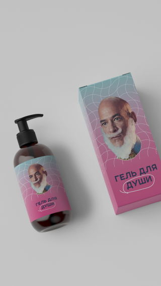

<section class="section start js-main">
        <div class="start__bg start__bg--video start__bg--img">
            <video src="../img/video/video-2.mp4" autoplay muted loop></video>
<!--            <picture class="picture">-->
<!--                <source-->
<!--                        media="(min-width: 600px)"-->
<!--                        srcset="../img/start-bg-desck.jpg, ../img/start-bg-desck@2x.jpg 1.25x"-->
<!--                />-->
<!--                -->
<!--            </picture>-->
        </div>
    <div class="container">
        <h1 class="start__title">
            ТУТ БУДЕ ВІДЕО
        </h1>
    </div>
</section>